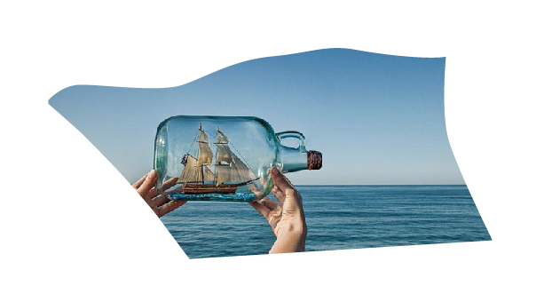

"Ik beschouw mijn hersenen als een zeer uiterst belangrijk aspect;
namelijk het commandocentrum van waaruit mijn hele wezen wordt bestuurd".
Inleiding
De interesse in ons brein is ontstaan door mijn nieuwsgierigheid naar wie we zijn zoals we zijn. Waarom de één wel in staat is om creatief te zijn en de ander niet. Wat ons als individu uniek maakt in plaats van iemand anders. Door persoonlijke omstandigheden is mijn interesse nog meer versterkt. Na een ongeluk functioneren sommige lichaamsdelen niet meer zoals deze zouden moeten functioneren. De vraag die ik mezelf vaak stel, maar ook aan mij gesteld wordt, is: ‘Hoe komt het dat je nu wel in staat bent om te lopen en 10 jaar geleden niet? Wat is het of hoe komt het dat ik de controle over de dagelijkse pijn over heb kunnen nemen? Het brein is een orgaan dat zich kan aanpassen aan veranderende omstandigheden. Schade aan het brein, als gevolg van een ongeluk of ziekte, kan tot op bepaalde hoogte opgevangen worden, doordat niet-beschadigde hersengebieden harder gaan werken of taken overnemen. Het brein, gezien als een netwerk, is dus veranderlijk.
Gedurende het schrijven van mijn scriptie heb ik het brein diverse benamingen gegeven. Voor mijn gevoel is het te vergelijken met “een arbeidsbesparend apparaat”, “een computer”, “een netwerk” of “een commandocentrum”. Natuurlijk ben ik geen neuroloog, bioloog, psycholoog of een hersenonderzoeker. Ik ben een ontwerper die geïnteresseerd is in ons kunnen en zijn, geïnteresseerd in het feit waarom wij dingen kunnen doen zoals we die doen.
Ik beschouw mijn hersenen als een uiterst belangrijk aspect; het commandocentrum van waaruit mijn hele wezen, tot de kleinste lichaamsbeweging aan toe, bestuurd wordt. Het brein bepaalt ons bewustzijn en is daarin niets anders dan een computer. Onder de voorwaarden van het commandocentrum, het brein, beweegt mijn lichaam zich als één groot uitvoerend instrument. Mijn lichaam is slechts een vorm in de fysieke wereld. De sensorische neuronen van verschillende lichaamsdelen gaan rechtstreeks mijn hersenen in, terwijl de motorische neuronen de tegenovergestelde kant uitgaan: van mijn hersenen naar al mijn spieren. Rechtstreekser kunnen verbindingen niet zijn. Een wisselwerking die continu plaats vindt. Ik heb onmiddellijke controle over wat mijn lichaam doet, al besef ik niet dat die controle wordt aangestuurd door mijn brein maar denk ik dat ik het uit mezelf doe. Bovendien hoef ik geen conclusie te maken over de staat waarin het zich bevindt. Ik heb bijna directe toegang tot elk deel van mijn lichaam telkens als ik dat deel nodig heb. Het brein regelt het namelijk automatisch zonder dat ik mij daar bewust van ben of iets van merk.
Hoe je het ook wendt of keert, ons brein is een fascinerend en wonderbaarlijk orgaan. Het controleert je hele leven, iedere beweging, geur en emotie. Het registreert iedere herinnering van je grootste geluk tot je diepste pijn. Het reguleert alles van je ademhaling tot de groei van de nagel van je linker kleine teen. Toch identificeer ik mij niet met mijn hersenen, ik zie ze als een beperkte afspiegeling van mijn wezen. Natuurlijk besef ik mij maar al te goed dat de structuur en de werking van mijn hersenen bepalend zijn voor hoe ik me in deze wereld manifesteer. Middels onze lichamelijke zintuigen staan we in contact met een voortdurend veranderende buitenwereld waarin wij dingen waarnemen op ieder zijn eigen manier.
Kortom, ons brein is een belangrijk, ingewikkeld, maar vooral een inspirerend orgaan. Naar aanleiding van bovenstaande omschrijving en mijn interesse in het brein kan de volgende onderzoeksvraag worden opgesteld: Hoe wordt het brein verbeeld?